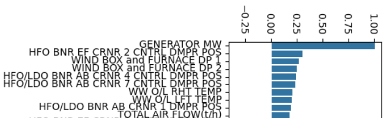

Power Plant Optimization
A Data-Driven Approach to Enhancing Fuel Efficiency
Project Summary
Overview
Coal-fired power plants are central to electricity generation but grapple with fuel inefficiency, high emissions, and the limitations of manual control. This project harnesses the vast amount of data from SCADA systems to optimize plant operations using machine learning.
The Problem
Manual, heuristic-based operations result in significant inefficiencies, including high coal consumption, suboptimal power output, challenges in meeting emission regulations, and the underutilization of valuable SCADA data.
Objectives
- Build a data-driven framework to clean, analyze, and model plant operations.
- Predict power output accurately using Random Forest and XGBoost models.
- Identify and optimize key operational parameters to improve fuel efficiency and reduce emissions.
- Provide actionable, SCADA-integrated recommendations for operators.
How a Coal-Fired Power Plant Works

Fig 1: Schematic of a typical coal-fired power plant.
A power plant is a facility that converts a primary energy source, like coal, into electrical energy. The process in a coal-fired plant involves several key stages:
- Combustion: Pulverized coal is burned in a furnace, generating immense heat.
- Steam Generation: This heat is used in boilers to convert water into high-pressure steam.
- Turbine Rotation: The high-pressure steam is directed to spin the blades of a turbine.
- Power Generation: The turbine is connected to a generator, which converts the mechanical rotation into electricity.
- Condensation: The steam is then cooled back into water and recycled, completing the circuit.
Data and Methodology
About the Data
The dataset consists of over 110 parameters from the plant's operational logs. The primary goal was to predict the `GENERATOR MW` (the power output) based on a wide range of input variables.
- Output Variable: GENERATOR MW
- Fuel & Combustion: TOTAL COAL FLOW, Damper Positions
- Airflow: TOTAL AIR FLOW, Furnace Draft Pressure
- Steam Cycle: Main Steam Line Temp, Water Flow
Methodology
- Data Collection: Gathered historical SCADA data.
- Preprocessing: Cleaned data, handled outliers, and scaled features.
- Feature Engineering: Created new, insightful features like air-to-fuel ratios and temperature differentials.
- Model Training: Trained and tuned Machine Learning models to predict power output.
- Optimization: Used the trained model with an optimization algorithm (Optuna) to find the best operating parameters.
Modeling and Performance
Feature Importance
The XGBoost model allowed us to identify the most influential factors. `TOTAL COAL FLOW` and `TOTAL AIR FLOW` were, as expected, highly significant.
Fig 2: Top 10 most important features.
Models Used
Two primary models were evaluated for this regression task. The XGBoost model provided superior performance after extensive hyperparameter tuning.
1. Random Forest Regressor
A strong baseline model.
2. XGBoost Regressor (Final Model)
Demonstrated higher accuracy and better captured the system's non-linearities.
Performance Metrics
The tuned XGBoost model achieved a high R-squared value, indicating it explains nearly 88% of the variance in power output.
| Model | R-squared |
|---|---|
| Random Forest | 0.8212 |
| Tuned XGBoost | 0.8797 |
Optimization Results
The core of the project was to use our accurate model to find a "sweet spot" of operational settings. The optimization algorithm successfully identified a set of parameters predicted to significantly boost efficiency.
| Parameter | Typical Operation (Baseline) | Optimized Operation (Predicted) | Improvement |
|---|---|---|---|
| Generator MW | ~635 MW | 695.47 MW | +9.5% |
| Total Coal Flow | ~346.5 t/h | 325.60 t/h | -6.0% |
Deployment & Conclusion
The final model was packaged into a production-ready API using FastAPI. This allows the optimization logic to be seamlessly integrated into the plant's internal dashboards and real-time analytics pipelines, providing operators with data-driven recommendations.
This project successfully demonstrates that significant efficiency gains are possible not by pushing individual inputs to their limits, but by finding a more harmonious and efficient balance between them, discovered through machine learning.